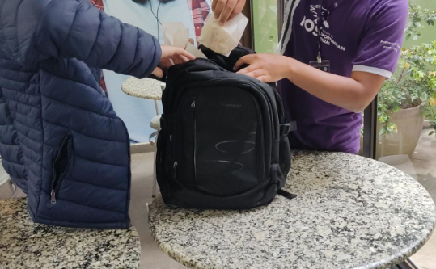

Principais notícias
O que é fake news e como isso atinge nossa vida pessoalHá 2 horas
Conheça a trágica decadência dos BarbixasHá 5 horas
O que é fake news e como isso atinge nossa vida pessoalHá 8 horas
Mariana Avestruz
Da BBC News Brasil em Porto Alegre
Há 1 horas
Um grupo de alunos do Instituto da Oportunidade Social (IOS) de Porto Alegre foram flagrados comprando lanches de outros alunos, coagindo eles de forma agressiva usando de chantagens e ameaças.

Para buscar resolver a situação, a professora Clarice enviou as denúncias para a direção do Instituto, aguardamos mais informações.
Há 2 horas
Conheça a trágica decadência dos BarbixasHá 5 horas
O que é fake news e como isso atinge nossa vida pessoalHá 8 horas